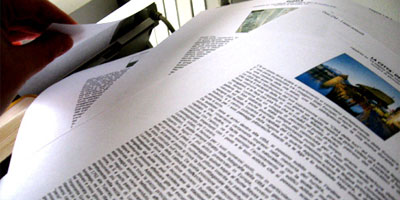

CSS doesn’t apply exclusively to the Realm of the Screen. You can also write style sheets that apply to the medium that first spawned them – print. This can be a very useful trick, since people read on the screen very differently than they read print documents. And your fancy-dancy layout may look stellar at 1024×768, but that doesn’t mean it rocks equally at 8 1/2″ x 11″.
So here are a few tips for creating a print style sheet that will ensure your website is user-friendly, regardless of the medium it ends up in.
1: Specify a Print Style Sheet
How’s that for a great opener? Specifying the style sheet in your code is the first step to a much more useable website. Here’s how you do it:
<link rel="stylesheet" href="print.css"
media="print" />
The important part here is the media=”print” option. This tells the web browser to only apply these styles to print media.
2: Build On Your Screen CSS
One nice trick you can use is to build your print style sheet to amend your screen style sheet. To do this, simply neglect to reference a medium in your screen CSS link, like so:
<link rel="stylesheet" href="screen.css" />
<link rel="stylesheet" href="print.css"
media="print" />
This causes your screen style sheet to be applied to both screen and print. Meaning, your print CSS only has to describe the things you want to do differently.
3: Wipe Out Your Screen CSS
Of course, if you want your print CSS to differ widely from your screen CSS, denoting all the differences between the two would be tedious. In that case, you’d want to do something like this:
<link rel="stylesheet" href="screen.css"
media="screen" />
<link rel="stylesheet" href="print.css"
media="print" />
Specifying a media of “screen” for your main CSS file means your print style sheet is building upon a blank slate. If you’re making a lot of changes, this can be useful.
4: Hide Extraneous Elements
Not everything that is useful on the screen is nearly so useful in print. For example, the navigation at the top of your page, or the blogroll in your sidebar, aren’t nearly so useful when they take up a full printed page and obscure your text. Consider hiding them in your print style sheet by creating a list of multiple selectors, like so:
#navigation, #blogroll {
display: none;
}
Then, as you come across more elements that shouldn’t be in your printed version, you can just add them to the list.
5: Bump Up Font Sizes and Line-Heights
While I’m sure your 10-pixel-high cramped Helvetica looks so very avant-garde on the screen, people usually prefer a little more room when they’re reading on the page. Try bumping up the font-size and line-height a little compared to the screen:
body {
font-size: 120%;
line-height: 130%;
}
6: Move to Serif Fonts
Serif fonts were created to make it easier to read words on the printed page. The serifs (the little “feet” at the bottoms of letters) help the eye define the edges of the letters and lines on the page. Sans-serif fonts, on the other hand, were invented for the screen: the serifs on low-resolution monitors and at small sizes tend to make the letters look a little fuzzy. So while Helvetica may be a great choice for the screen, perhaps Georgia would be better suited for the page:
body {
font-family: Georgia, "Times New Roman",
Times, serif;
}
7: Think in Inches and Points
Pixels are a useful unit of measurement when dealing with the screen, but they lose some of their usefulness when you move to the printed page. At that point, it’s useful to remember that in CSS, you’re not limited to setting sizes in pixels, percentages or ems. You also have inches, centimeters, millimeters, points, and even picos at your disposal. Make use of them:
body {
font-family: Georgia, "Times New Roman",
Times, serif;
font-size: 12pt;
line-height: 18pt;
}
body #container {
margin: 1in 1.2in .5in 1.2in;
}
What other print style sheet tips have I missed? Share the love in the comments!